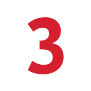

Map the live queues
Connect support themes to delivery queues across eBanking, core banking, workplace service, and security handoff flows.

Prepared for Markus Haspl at 3 Banken ITBanking delivery support
3 Banken IT already owns the hard work: eBanking, core systems, security, infrastructure, and service quality for three banks.
We saw the IT Support Engineer hiring signal, plus open senior Java, cloud, DevOps, test strategy, and product owner roles. That looks like rising support load and delivery pressure at the same time.
Elinext would add a small banking squad under your Product Owner or PM, with weekly demos and your security rules.
Connect support themes to delivery queues across eBanking, core banking, workplace service, and security handoff flows.
Automate high-risk flows for login, 2FA handoff, payment state, statements, card limits, and API checks.
Add senior Java and Angular capacity while your leads keep architecture, release, and bank-side decisions.
Hand over runbooks, test data notes, and release checks your internal teams can keep using.
Elinext is a full-cycle software development company, active since 1997, with about 700 in-house specialists and no freelancers.
For banking IT, the useful parts are ISO 27001, ISO 9001, strong QA, and Java, .NET, Angular, React, Python, mobile, and DevOps skills.
We can work as a dedicated squad under your Product Owner, so your governance stays in place.
That matches the plan above: extra senior capacity, strict testing, and clear weekly demos.

Financial services and banking
Elinext turned high-level bank specs into a Java, Spring, Angular, and Kubernetes liquidity system.
Outcome: about five million items are processed daily for banks and financial organizations.
Read the case study
Financial services and banking
Elinext provided QA for transaction reconciliation and banking web flows.
Outcome: stronger coverage, fewer late defects, and shorter delivery cycles.
Read the case study